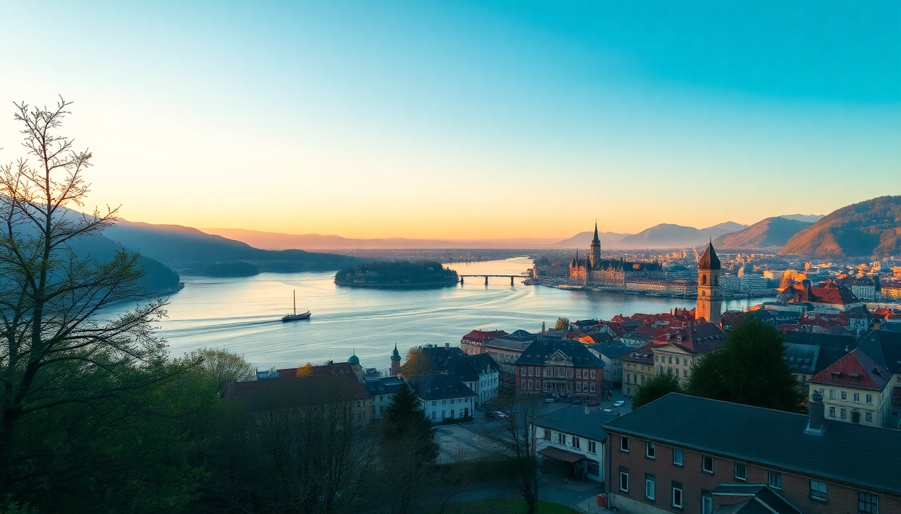

Where to Stay in Lucerne: Best Neighborhoods for Every Budget

Picking where to stay in Lucerne can make or break a trip. I spent a week bouncing between three different parts of the city, and each felt like a completely different destination. The Old Town is postcard-perfect but noisy. The Neustadt side is quieter and more local. The lakefront hotels cost more but deliver views that justify the price. Here’s what I learned, broken down by budget and travel style.
Why Should You Choose Altstadt (Old Town)?
If you want to wake up to painted facades and cobblestone alleys, Altstadt is your spot. I stayed at Hotel des Balances right on the Reuss River, and the room’s balcony looked directly at the Jesuitenkirche and the Kapellbrücke (Chapel Bridge). You can walk to everything — the Lion Monument, the Museggmauer towers, and the main train station are all within ten minutes.
- Best for first-time visitors who want to be in the center of the action.
- Budget picks — Backpackers Lucerne is a solid hostel near the train station, and Hotel Alpha offers basic rooms a five-minute walk from the Weggisgasse shopping street.
- Mid-range — Hotel des Balances is worth the splurge for river views; Hotel Rebstock has a quieter courtyard location.
- Watch out for — street noise on weekends. The bars along Mühlenplatz stay open late, so ask for a room facing the inner courtyard.
- Eat at — Brasserie Bodu for Swiss-French bistro food, or grab a quick Fleischkäse roll at Bäckerei Hug near the station.
Is Neustadt a Better Choice for Budget Travelers?
Yes, absolutely. Neustadt (the “new town”) sits on the south side of the river, directly across from Altstadt. I found better hotel deals here, and the vibe is less touristy. My room at Hotel Drei Könige was half the price of comparable Old Town options, and I could still walk to the Kunstmuseum Luzern in under ten minutes.
- Best for solo travelers and couples who don’t need to be on top of every attraction.
- Budget picks — Hotel Drei Könige and Hotel Rothaus both offer clean, no-frills rooms under 150 CHF per night.
- Mid-range — Hotel Monopol is right across from the train station, with a rooftop terrace that has views of the lake.
- Why I liked it — the Hertensteinstrasse area has real grocery stores (Coop and Migros) and cheap kebab shops, which saved me money on breakfast.
- Downside — you’ll cross the Seebrücke bridge to reach Altstadt, which adds five minutes to any walk.
Where Should You Stay for Lake Lucerne Views?
For lake views, you want the Seefeld neighborhood along the Quai promenade. I spent two nights at Hotel Schweizerhof Luzern, and the room’s floor-to-ceiling windows faced the water and Mount Pilatus. It’s expensive, but the experience is different — you can watch the paddle steamers dock right below your window.
- Best for couples on a special trip or anyone who wants a room with a view.
- Luxury picks — Hotel Schweizerhof Luzern (old-world elegance) and The Hotel Lucerne, Autograph Collection (modern design with a rooftop bar).
- Mid-range — Seehotel Hermitage is a ten-minute bus ride from the center but sits right on the lake with a private beach.
- What to do — rent a paddleboard from Lido Luzern or take the SGV boat to Weggis for a day trip.
- Caveat — lakefront hotels fill up fast in summer. Book at least three months ahead.
What About Staying Near the Train Station?
The area right around Luzern Bahnhof is convenient but not charming. I stayed one night at Hotel Central Luzern because I had an early train to Interlaken, and the location was unbeatable — the platform was a two-minute walk. But you’re surrounded by bus lanes, construction, and fast-food chains.
- Best for travelers with tight connections or those arriving late and leaving early.
- Budget picks — Hotel Central Luzern and Hotel Pickwick (above an English pub).
- Why you might skip it — no lake views, no Old Town atmosphere, and the Löwenstrasse intersection is busy with traffic.
- Pro tip — if you stay here, walk five minutes to the Neustadt side for better food options at Restaurant Fritschi or Café Rössli.
Is It Worth Staying in the Suburbs or Outside Lucerne?
For budget travelers, yes — but only if you plan your transport. I spent one night at Hotel Felmis, a 15-minute bus ride from the city center, and paid 80 CHF for a single room. The bus (#19) runs every 15 minutes and drops you at the station. You lose the ability to stumble home from a bar, but you save serious cash.
- Best for backpackers and families on a tight budget.
- Budget picks — Hotel Felmis and Youth Hostel Luzern (actually in the city, but in the quieter Friedental area).
- What you gain — cheaper meals at local restaurants like Restaurant Sternen in Kriens.
- What you lose — spontaneity. The last bus back is around midnight, so you’ll need a taxi or Uber if you stay out late.
Which Neighborhood Is Best for Families?
Families should look at the Lido area or Seeburg, east of the city center. I saw several parents with strollers at Seeburg Park, which has a playground, a shallow swimming area, and a restaurant with a kids’ menu. The bus #24 connects directly to the station in ten minutes.
- Best for families with young kids who need space and quiet.
- Hotel picks — Seehotel Hermitage (family rooms, a garden, and a buffet breakfast) or Hotel Seeburg (smaller, more intimate).
- Why it works — the Swiss Museum of Transport is a 20-minute walk along the lake, and the Lido Luzern has a pool and slides.
- Avoid — Altstadt with a stroller. The cobblestones are brutal, and many buildings have no elevators.
FAQ
Is Lucerne walkable, or do I need public transport? Lucerne is very walkable if you stay in Altstadt, Neustadt, or near the station. The entire Old Town is pedestrian-only. For the lakefront, suburbs, or the Museum of Transport, use the VBL buses (tickets from the station machines). A day pass costs about 10 CHF and covers all city buses.
What’s the average hotel price in Lucerne? Budget rooms (hostels or basic hotels) start around 80–120 CHF per night in low season. Mid-range hotels run 150–250 CHF. Lakefront luxury hotels often hit 400–600 CHF. Prices double in July and August, so book early.
Should I book a hotel with breakfast included? Yes, if you can. Swiss breakfasts at hotels are typically extensive (cheese, bread, meats, muesli) and cost 20–30 CHF separately. I saved money by staying at Hotel Drei Könige, which included a buffet, and then skipping lunch until 2 PM.
Conclusion
- Altstadt is best for first-timers who want to be in the middle of everything — just expect noise and higher prices.
- Neustadt offers the best value for budget travelers without sacrificing walkability.
- Lakefront hotels are worth the splurge if views matter more than your budget.
- Near the station works only for short stays or tight connections.
- Suburbs save money but require planning around bus schedules.